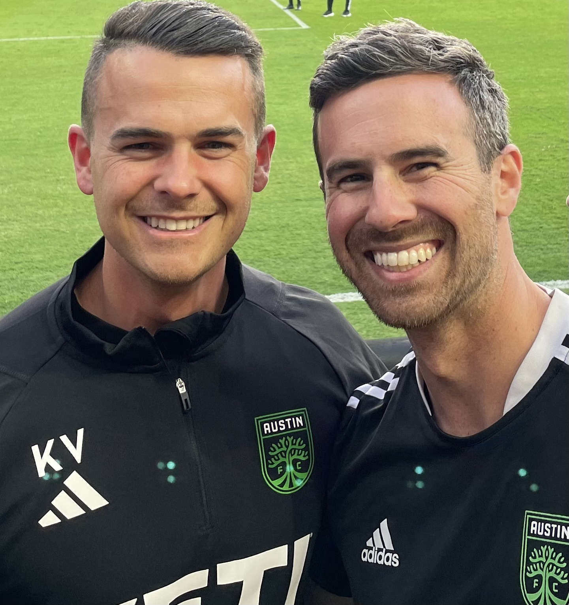

Kyle Voigt
Performance Coach turned Sport Data Scientist, currently an Assistant Performance Coach and Sport Scientist at Austin Football Club,
üëâ kjcvoigt@gmail.com
Tech Stack
Python, Postgres, Power BI
Work History
⚽️ ASSISTANT PERFORMANCE COACH AND SPORT SCIENTIST | AUSTIN FOOTBALL CLUB
1/3/2023 - Present
Manage all in-training Catapult GPS and FirstBeat Heart Rate tagging and post-session uploading of all training sessions and matches.
Collaborate with the Fitness & Rehab Coach in the designing and administering of individualized pretraining activation protocols and in-season strength training sessions.
Manage, design, and implement weight room physical testing protocols including force plate technology.
Evaluate player performance through performance testing, workload monitoring and body composition testing.
üèà üèê SPORTS SCIENCE COORDINATOR | UNIVERSITY OF SOUTHERN CALIFORNIA ATHLETICS
6/19/2019 - 12/23/2021
Utilized Catapult Sport to monitor external load metrics for USC Football and to aid in the development of
summer training programs, in-season periodization schemes, and monitor return-to-play student-athletes.
Developed and implemented an applied sports science system with USC Women’s Volleyball, monitoring
external load metrics with Catapult Sport, subjective load with session Rating of Perceived Exertion, and
aided in recovery protocol implementation.
Collaborated with USC Master of Biokinesiology department to implement a part-time internship program.
üèÄ ‚öΩÔ∏è PERFORMANCE ANALYTICS FELLOW | UNIVERSITY OF LOUISVILLE SPORTS PERFORMANCE
7/5/2018 - 5/12/2019
Assisted with the development of a high-performance model as a Performance Analyst within top-ranked
Men’s Soccer and Women’s Basketball programs by utilizing various methods to communicate how to best
optimize physical performance and reduce injury risk.
Developed and executed comprehensive resistance training programs for University of Louisville Diving,
utilizing the Louisville Sports Performance training methodology.
üèãÔ∏è GRADUATE ASSISTANT ATHLETIC PERFORMANCE COACH | UNIVERSITY OF CALIFORNIA, LOS ANGELES ATHLETIC PERFORMANCE
6/1/2017 - 7/1/2018
Designed and applied comprehensive resistance training programs for UCLA Cross Country.
Aided in the construction and implementation of various performance metric databases, including athlete
load monitoring, performance assessment, and body composition platforms using Microsoft Excel and
Power BI.